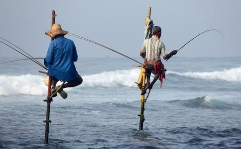

前天,听朋友说当地某水库,一上午就去了60多名垂钓者。
闻听此言,心痛不已!
既为鱼儿们,亦为垂钓者!
特将在中华
这是我的一段经历,希望给喜欢钓鱼的朋友提个醒。
读小学时和初中时候曾喜欢钓鱼,那时的小城市周围骑车半小时以上都能找到几条野河,周末有时和大人约好搭了他们便车去钓鱼,一钓就是一天。
有时候,自己5点钟骑了自行车出去,下午3点回来,一天的收获虽然不是很多,总是有一两条大鱼。直到一次经历之后,就再也没有钓过鱼。
一年,朋友父亲过世,我当时帮忙料理后事,很晚才休息。一大早起来要去参加葬礼,也许是太累了,也许是在太平间呆得久了,那天早上竟莫明其妙摔了一跤,脸朝下,顿时血就从嘴中流了出来,满嘴都是血。
父母以为是门牙磕掉了,仔细一看,是下嘴唇的内侧被牙齿嗑破了一个大口子,血不断地涌出来。赶往医院,医生拿出针给我缝伤口,我没让打ma药,想就几针应该可以挺住。
接下来的场景让我终身难忘,针形和渔钩相似极了,是个弯钩形状的,然后让我张开嘴,翻开嘴唇,一针弯过去,线也跟着穿过我的内侧嘴唇皮,缝了4针。疼倒是忘记了,我只是觉得自己和鱼一样,被钓过的鱼肯定有这样的感觉,太
之后,我再也不钓鱼了。
我永远记得这件事,所以每次到水库,有人垂钓的地方,我就忍不住,去请求钓鱼的人们,一个个去告诉他们,但愿大家不要重蹈这血泪的覆辙! 有的人不理会我,不相信冷眼地看着我,但大多数人还是愿意把钓竿收起来。
很多人不懂,其实动物也是生命,每种动物都有自己的神识,它都有渴求生命的欲望,我们伤害它们,它们就会来报复我们,很简单的,行为的反作用力而已。就像用劲打别人,自己的手也会很疼。
劝亲友别钓鱼父亲是位钓鱼老手,无论技术上,或鱼讯都很清楚熟练。手钓时,一盏小灯直照浮标,只要浮标上下浮动或闪动,扬竿一拉,少有落空。每当拆钩时,有时鱼嘴鱼眼都给钩破了,而鱼嘴还一张一合喃喃的,似是埋怨,又象是咒骂。
轮钓时,鳗鱼更是可怜,由于鳗鱼吃东西是用吞食的,所以连鱼钩一起吞到肚子里,每当拉起时,鳗鱼绞痛的身形扭成一团,状似非常痛苦,如今想起钓鱼是残酷,也真是可怕!
高中毕业不久,父亲突然得胃癌了,全家笼罩在一片愁云惨雾之中,父亲送医时,医生剖腹检视后,又将之缝合,摇摇头说:“没有救了。”如此辗转送医,剖腹缝合,经历三次,最后一次在家人要求下,勉强将胃切除,其实癌细胞已扩散到其它部位了。
父亲肚子日渐扩大,每当呻吟哀号,翻来滚去时,我总是想到鳗鱼被钓上,挣扎成团的情形,同时也想到父亲钓鱼返家杀鱼剖肚,就和他在手术台上的剖腹手术并无两样啊!就这样痛苦哀嚎了数月,父亲终于与世长辞了。
虽然家父一生行善,但是以钓鱼为嗜好,为娱乐,残杀众生无数,虽有长寿相,但
我要奉劝以钓鱼为嗜好的人们,杀生反作用力最是可怕,钓鱼是杀生的行为,不应当把它当做乐趣,赶快回头吧!
“钓鱼队”的消亡我父母住的职工家属院,曾经有个知名的钓鱼队。小时候每天早晨,就会听到楼下“突突”的摩托车发动的声音,这是“钓鱼队”出发了。每逢周末,钓鱼队更是乐此不疲地去郊区钓鱼,后来我离家负笈南北,钓鱼队的消息就知之甚少了。
2006年春节回家过年,听母亲说楼上老张家搬新房子,死后还留下座新房子云云。一问才知,作为钓鱼队的最后一名成员,老张已经于几年前死于癌症!至此,钓鱼队所有成员几乎全部中年早亡!以鱼儿的痛苦为乐趣的钓鱼队悲惨地消亡了……
钓友们,请抛弃所有主见,也不要管符合不符合你心中的“主义”、“思想”,有亲戚朋友捕猎杀生的,请赶紧劝他们尽早终止改行。捕猎杀生,大自然很
“钓鱼队”成员几乎全部中年早亡!
你要它死,它也不让你活!
为什么说钓鱼对身体不好?因为水是阴性,人是阳性,一个人面对一大片水,就像是一根蜡烛掉进水库里,你说钓鱼者身体能好吗?
鱼虽是低微物类,但也有神识,也知贪生怕死,与人无异。钓鱼无论如何算不上一种高雅的运动,充其量只是一种杀戮,把自己短暂的快乐建立在鱼儿无穷的痛苦之上!全国90%的钓鱼者,身体都不好,
万勿毒鱼、炸鱼、电鱼,下场极其惨烈!
炸鱼能手现报:我住处离湘江只有三公里路,常常听到江上有放炮的声音,原来有一个26岁的青年,名叫唐富来,以炸鱼为生。他的炸鱼技术很高,被当地人称为“炸鱼能手”。被他炸死的鱼,何止千千万万,他因此也发了一笔小财。
常言道:“
霎时,轰隆一声,炸鱼能手血肉横飞,惨死在炸鱼的地方,妻子儿女赶来悲痛欲绝,四邻亲友也都摇头叹息。没想反作用力来的这么快,这么强!
所以请钓友们深思!为了补偿以往伤害众生的罪过,请积极放生弥补!如果您暂时不能放生补偿,也请停止渔猎,这都是为了您自己和家人的长久安乐!将心比心,您应该不会否认鱼类被钩子伤害、被屠戮时的痛苦,也不会认为它们没有感受痛苦的能力吧!现在社会是多元的,有这么多